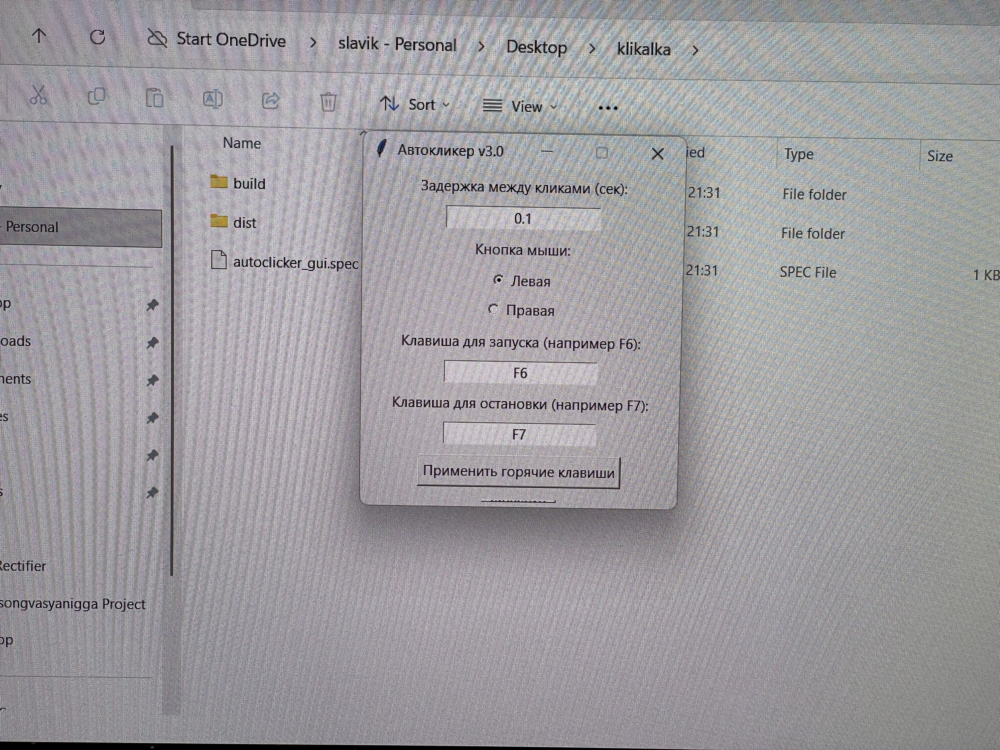
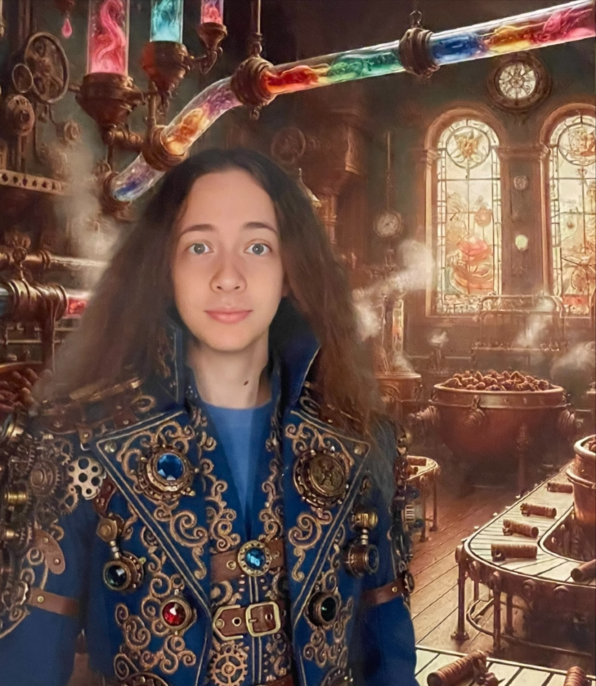
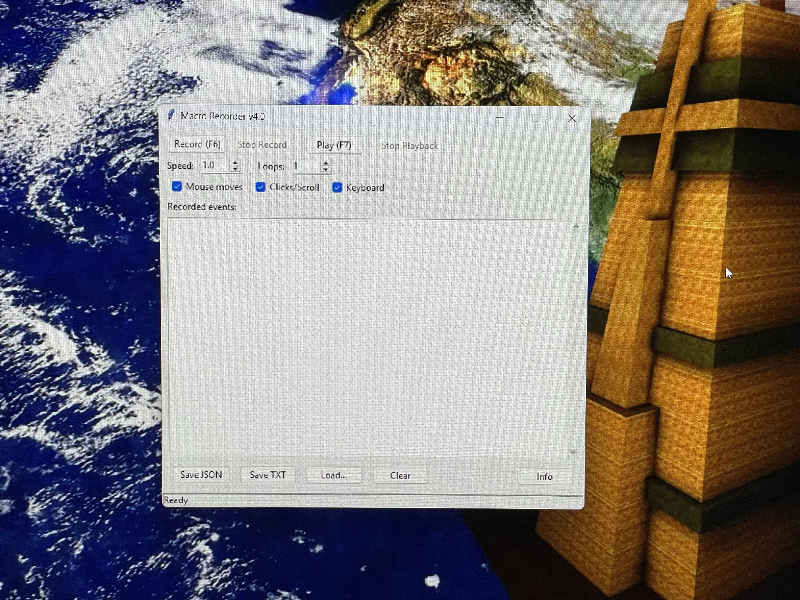
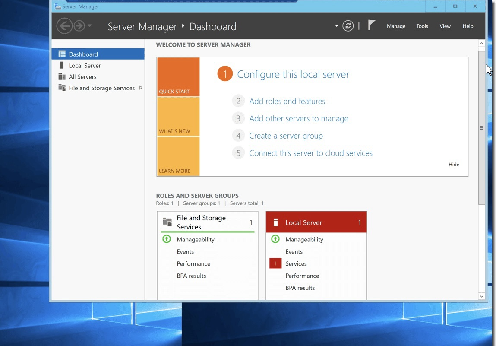

AutoClicker
Dette var et av mine personlige prosjekter som jeg gjorde i mitt første skoleår.
Viacheslav Zhydkov
Jeg studerer ved Breivang vgs

Et lite utvalg av skoleoppgaver og egne prosjekter der jeg utforsker kode, struktur og visuell form.

Dette var et av mine personlige prosjekter som jeg gjorde i mitt første skoleår.

Dette prosjektet gjorde jeg på oppfordring fra en venn.

Jeg var interessert i å lage min egen server. Et prosjekt for selvutvikling.
Jeg studerer på Breivang VGS i Tromsø. På fritiden liker jeg å code og lære nye ting. Jeg er en person som liker å prøve nye ting, utvikle ferdighetene mine og jobbe med kreative prosjekter.
HTML, CSS, Python, JavaScript